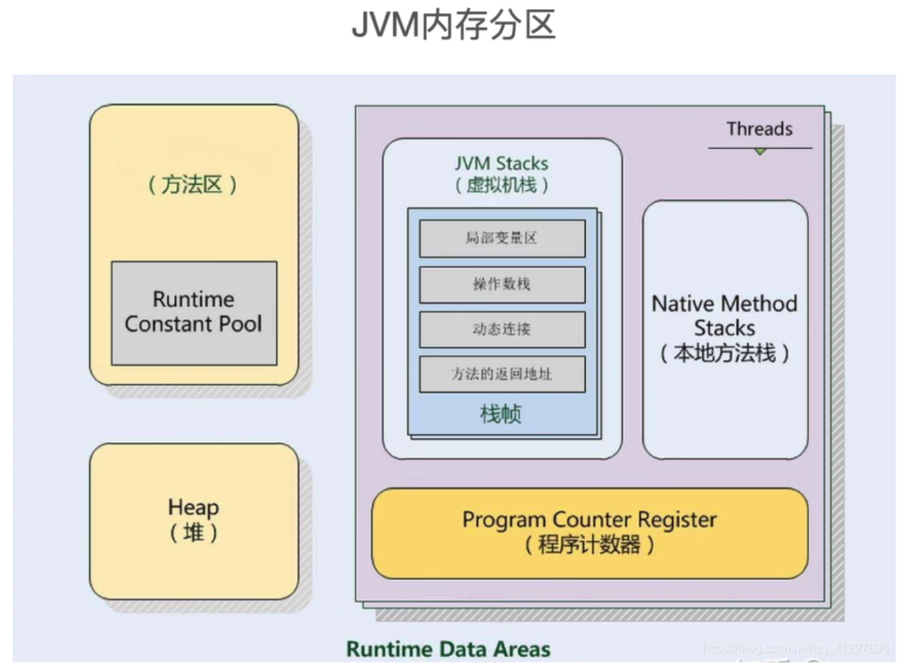
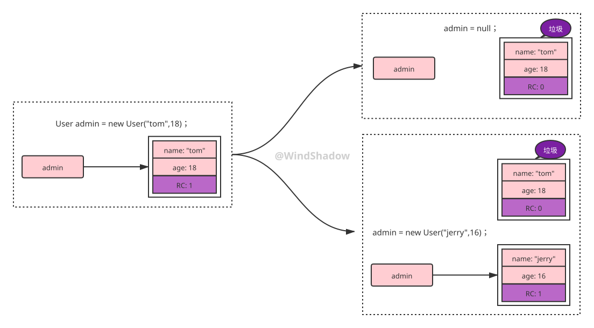
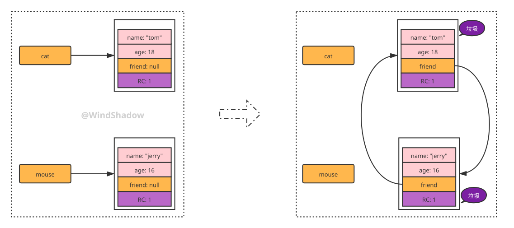
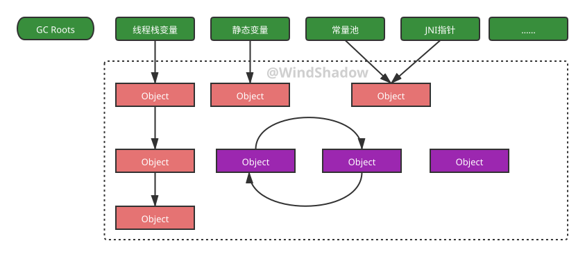
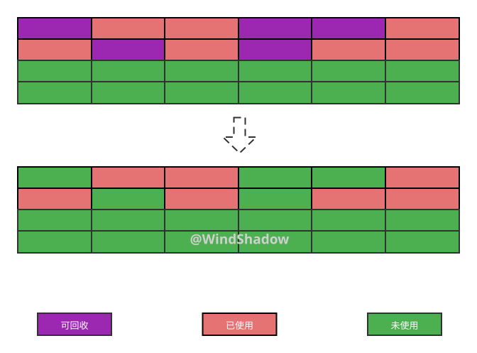
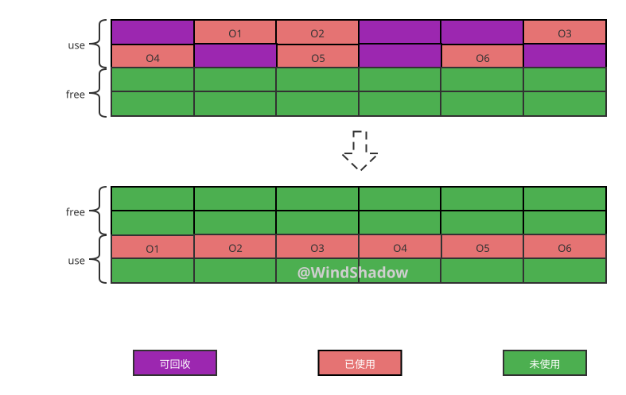
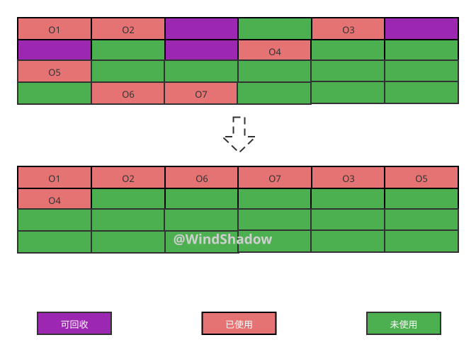
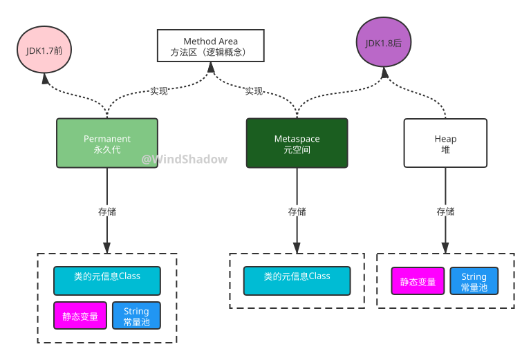
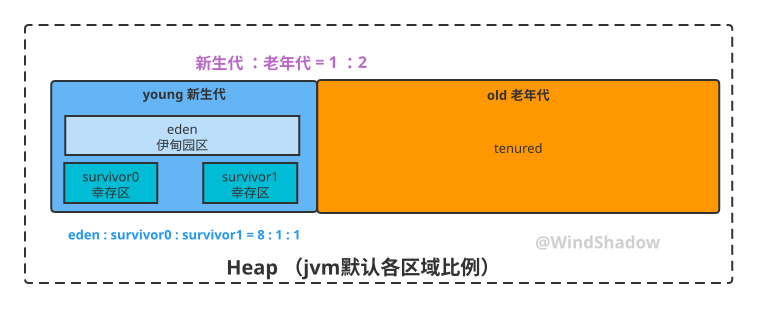

JVM垃圾回收入门
本文JVM以常用的Hotspot虚拟机为例。
JVM内存分区
Java垃圾回收也叫GC（Garbage Collection），了解GC之前先了解JVM内存分区。
JVM将内存分为5大部分：方法区、堆、虚拟机栈、程序计数器、本地方法栈
如图（图片来自互联网）

垃圾回就是释放垃圾占用的空间，防止内存泄露。有效的使用可以使用的内存，Java中主要对内存**堆（Heap）**中已经死亡的或者长时间没有使用的对象进行清除和回收。
下文《分代回收模型与分代回收算法》小节着重讲方法区和堆，此处先照个面。
什么是垃圾
知道垃圾回收大体概念后，那么什么是垃圾呢？或者说什么样的对象才能称之为垃圾？
定义：没有任何引用指向的一个对象或多个对象（循环引用，见下文）
User a = new User("admin");// new 了一个名为"admin"的User对象，其引用给到了变量a
a = null; // 此时名为"admin"的User对象没有被引用了，成为了垃圾，GC被触发时会被回收
如何定位垃圾
引用计数法（reference count）
给每个对象添加一个计数器，当有地方引用该对象时计数器加1，当引用失效时计数器减1。用对象计数器是否为0来判断对象是否可被回收。

缺点：无法解决循环引用。
显然循环引用的多个对象也要被认为是垃圾，但是引用计数法无法定位到它们。

根可达算法（roots searching）
顾名思义，一种以某种对象为起点的搜索算法，可以被搜索到（可达性）的对象就不认为是垃圾，反之不可达对象就是垃圾，这种作为起点的对象称之为GC Roots。
GC Roots主要有：线程栈变量、静态变量、常量池、JNI指针等

垃圾回收算法
标记清除（Mark - Sweep）
优点：快
缺点：可用内存位置不连续，产生碎片

复制算法（Copying）
优点：不产生内存碎片
缺点：浪费空间（8G的内存实际只能用4G）

标记压缩（Mark - Compact）
标记清除之后再进行一次压缩。
缺点：效率偏低

分代回收模型与分代回收算法
JVM方法区（Method Area）
JVM方法区中存在roots searching算法所需的GC Roots，所以还是要提一提。
方法区只是一个逻辑概念（jvm规范中有言），对应1.7的永久代和1.8的元空间

永久代和元空间：
- 永久代必须指定大小限制，元空间可设置也可不设置，无上限（受限于物理内存）
- 字符串常量1.7时存在于永久代，1.8后存在于堆中
JVM堆（Heap）
JVM将堆内存区域分成新生代 + 老年代，各区域默认比例如图所示（可通过启动参数配置）

Young GC、Full GC
在新生代触发的GC叫Young GC，即YGC，也叫Minor GC，在老年代触发的GC叫Full GC，即FGC，也叫Major GC。
Eden区
大多数情况下，对象会在新生代Eden区中分配，当Eden区没有足够空间进行分配时，虚拟机会发起一次YGC。
Survivor区
Survivor区相当于是Eden区和Tenured区的一个缓冲区，Survivor区又分为2个区，一个是From区，一个是To区。每次执行YGC时，会将Eden区中存活的对象放到Survivor的From区，在From区中仍存活的对象会移动到To区。From区和To区的逻辑关系会发生交换： From变To，To变From，目的是保证有连续的空间存放对方，避免内存碎片化。
Tenured区（老年代）
JVM给每个对象定义了一个对象年龄（Age）计数器；
如果对象在Eden出生并经过第一次YGC后仍然存活，并且能被Survivor容纳的话，将被移动到Survivor空间中，并且对象年龄设为1。对象在Survivor区中每经历一次YGC（正常情况下，对象经历YGC后存活下来的时，会不断在Survivor的From与To区之间移动），年龄就增加1岁，当它的年龄增加到阈值（默认15岁，可以通过参数 XX:MaxPretenuringThreshold 设置 ），就将会晋升到老年代中。
对象内存分配规则
大多数情况下，对象会在新生代Eden区中分配，当Eden区没有足够空间进行分配时，虚拟机会发起一次YGC。YGC相比FGC更频繁，回收速度也更快。而较大的对象（需要大量连续内存空间的Java对象 ）直接进入老年代。
通过YGC之后，Eden区中绝大部分对象会被回收，而那些存活对象，将会送到Survivor的From区，若From区空间不够，则直接进入老年代 。
分代回收算法
分代回收算法是融合上述3种基础垃圾回收算法的思想，而产生针对分代回收模型中不同代采用不同算法的一套组合拳。
- 在新生代中，每次YGC都会有大批对象死去，少量对象存活，选用复制算法（Copying）来回收垃圾，只需复制出少量存活对象就可完成收集。复制成本低，效率高。
- 在老年代触发的FGC，虽然触发了GC，但是对象存活率高，没有额外空间对它进行分配担保，一般使用标记压缩（Mark - Compact）来进行回收，保证可用空间的连续性。